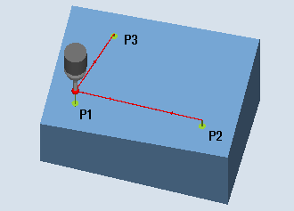

Mit dieser Messvariante kann die Winkellage einer räumlich schrägen Ebene an einem Werkstück durch Vermessen von 3 Punkten ermittelt und korrigiert werden. Die Winkel beziehen sich auf die Drehung um die Achsen der aktiven Ebene G17 bis G19.
Es gelten die gleichen Voraussetzungen wie bei der einfachen Winkelmessung, siehe Messvariante Kante ausrichten.
Zusätzliche Angaben sind für die Sollwertvorgabe des 2. Winkels erforderlich. Eine Korrektur in der Nullpunktverschiebung erfolgt in die rotatorischen Anteile (Drehung) der angegebenen Nullpunktverschiebung (NV).
Die translatorischen Anteile der NV bleiben unverändert und sollten in einer nachfolgenden Messung (z. B. Kante setzen, Ecke) korrigiert werden.
Nach der Messung kann an geeigneten Maschinen, bei denen eine Orientierungstransformation (Schwenken, TRAORI) eingerichtet ist, der Messtaster senkrecht auf der Messebene (Bearbeitungsebene) ausgerichtet werden.
Weitere Informationen zum Thema Schwenken finden Sie im Bedienhandbuch "Fräsen".
TRAORI
G0 C3=1 ;Ausrichten nach Werkzeugachse Z bei G17
Die Messvariante Ebene ausrichten erfolgt nach dem Prinzip der 2-Winkel-Messung:
Bei einem Werkstück mit einer räumlich schrägen Ebene erfolgen die Winkelkorrekturen im rotatorischen Teil der Geometrieachsen.
Messen: Ebene ausrichten (CYCLE998)
| Hinweis |
Maximaler MesswinkelDer Messzyklus |
Der Messtaster muss als Werkzeug mit Werkzeuglängenkorrektur aufgerufen werden.
Werkzeugtyp des Messtasters:
3D Multi-Taster (Typ 710)
Monotaster (Typ 712)
Der Messtaster ist über dem 1. Messpunkt P1 in den Achsen der Ebene (bei G17: XY) vorpositioniert.
Schutzzone "nein"
Der Messtaster wird in der Messachse maximal im Abstand vom Messweg DFA über der zu messenden Fläche über dem Messpunkt P1 auf Messhöhe positioniert.
Schutzzone "ja"
Der Messtaster wird in der Messachse maximal im Abstand vom Messweg DFA und dem Betrag im Parameter DZ (bei G17 immer Messachse Z) über der zu messenden Fläche über dem Messpunkt P1 auf Messhöhe positioniert.
In beiden Fällen muss beim Messvorgang der Messpunkt P1 sicher erreichbar sein.
Sind bei der 1. Messung die Abstände von der Bezugsfläche zu groß gewählt, erfolgt keine Messung.
Messachse ist stets die 3. Achse der Ebene (bei G17: Z). Der Messpunkt P1 ist in der Ebene so zu wählen, dass der Abstand zum 2. Messpunkt (L2) und zum 3. Messpunkt (L3) positive Werte ergeben.
Der Messtaster fährt parallel zur Bezugsfläche im Abstand des Parameters L2 zum Messpunkt P2 bzw. nach der 2. Messung im Abstand des Parameters L3 zum Messpunkt P3. Dabei wird der Winkel aus den Parametern α und TSA berücksichtigt. TSA enthält den Wert für die maximal zulässige Winkelabweichung.
Nach Ausführung der Messung in P1 erfolgt eine Positionierung zu P2 in der 1. Achse der Ebene und in der 3. Achse der Ebene (bei G17 in X und Z) unter Berücksichtigung des Winkels β und einer maximalen Abweichung in TSA. Nach Ausführung der Messung in P2 erfolgt die Rückpositionierung zu P1 auf gleichem Weg. Dann wird von P1 zu P3 in der 2. Achse der Ebene (bei G17 in X und Y) und der 3. Achse der Ebene unter Berücksichtigung des Winkels α und maximaler Abweichung in TSA positioniert und danach gemessen.
Die Positionierung von P1 zu P2 erfolgt in der 1. Achse der Ebene, von P1 zu P3 in der 2. Achse der Ebene. P2 bzw. P3 müssen mit der P1-Anfangsposition in der 3. Achse der Ebene (bei G17 in Z) ebenfalls kollisionsfrei erreichbar sein.
Der Messtaster steht über dem letzten Messpunkt (P3) im Abstand des Messweges gegenüber der Messfläche.
Siehe auch:
Messen: Ebene ausrichten (CYCLE998)